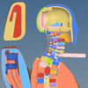
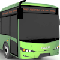
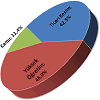
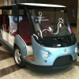
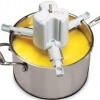

|
|
| Rapor - Makale
> Ürün Geliþtirme: |
EUNCAP whiplash (travma) testlerine uygun, düþük maliyetli koltuk iskeleti ve baþlýk geliþtirilmesi:
Murat Dal, Aralýk 2012, MARTUR Automotive Seating Systems
Whiplash simülasyonlarý, diðer çarpýþma simülasyonlarýna göre daha uzmanlýk isteyen ve altyapýsý (FE mankeni ve donaným) daha kapasiteli olmasý gereken simülasyonlardýr. FE modelindeki en küçük ayrýntýlar bile sonuçlar üzerinde etkili olmaktadýr... |
 |
Toplu taþýma otobüsü dýþ ayna kollarýnýn titreþim performansýnýn geliþtirilmesi:
Nur Hoþver, Veysel Çataltepe, Akýn Çevik, Özgür Uyar, Aralýk 2011, Kocaeli
Bu çalýþmada, Anadolu ISUZU tarafýndan geliþtirilen bir toplu taþýma otobüsünün dýþ aynalarýnýn titreþim performansýnýn, sonlu elemanlar analizleri ve titreþim testleri yardýmýyla geliþtirilmesi amaçlanmýþtýr... |
 |
Türkiye’de Ar-Ge ve inovasyon faaliyetlerinde son durum:
Hasan Acül, Yeni Ürün Geliþtirme Uzmaný, Ocak 2012, Ýstanbul
Ülkemizin Ar-Ge alanýnda Dünya genelindeki durumunu gösteren bilgileri, sektörümüzde faaliyet gösteren meslektaþlarýmla paylaþmak için, birebir derledim... |
 |
Rekabette bir adým daha önde olmak için; Yeni ürün geliþtirme süreç yönetimi:
Hasan Acül, Yeni Ürün Geliþtirme Uzmaný, Ekim 2011
Günümüzde araþtýrma ve ürün geliþtirme çalýþmalarýnýn neden yapýlmasý gerekliliði konusu artýk güncelliðini yitirmiþ ve çalýþmalarýn nasýl daha verimli yapýlabileceði konusuna, yani süreç yönetimine odaklanmýþtýr... |
 |
Yerli otomobil bir hayal mi?..
Saffet Çakmak, Makine Müh., Cadem A.Þ., Mayýs 2011, Ýstanbul
Evet, yerli otomobil bir hayal hem de çok güzel bir hayaldir… Her buluþ ve insanlýða faydalý olan, ilerleten her geliþme üstün insanlarýn hayalleri ile baþlar... |
 |
Pazara uygun tasarým:
Volkan Yýldýrým Önder, Makine Mühendisi, Þubat 2009, Ýstanbul
Tasarýmcýnýn eðer bir büroda ekranýn baþýnda oturup önüne konan dosyalarla ve kataloglarla yönetimin istediði ürünleri tasarlamaya çalýþýyorsa sorununuz baþlamýþ demektir. Bu sorun sadece sizin sorununuz deðil, 100 yýllýk firmalarýn batmasýna neden olan bir sorunudur... |
 |
Benchmarking; Ýþaretleri yargýlamak:
Volkan Yýldýrým Önder, Makine Mühendisi, Þubat 2009, Ýstanbul
Benchmarking, Ar-Ge yapmanýn en önemli süreçlerindendir. Ar-Ge ve tasarým süreçleri konusunda yeterince bilgi sahibi olmayan ve mühendislik alt yapýsý oluþmamýþ firmalar dahi bu süreci çok iyi bilirler... |
|
Devrim arabalarýnýn tasarým boyutu:
Arif Özver Ergin, Ocak 2009, Ýstanbul
Devrim Arabalarý Türkiye'nin tamamen kendi olanaklarý ile gerçekleþtirdiði ilk deneyimdir... Bu yazýnýn amacý, Devrim Arabalarý'nýn Türkiye'nin ilk tasarýmý olup olmadýðýný sorgulamaktýr... |
 |
Tasarýmdan ürüne bir fikrin serüveni:
Volkan Yýldýrým Önder, Makine Mühendisi
Tasarýmcý ürüne hem müþteri hem üretici gözüyle bakar ve memnuniyeti herkes için en üst seviyede tutacak kararlar verir. Her çizgi, her eðim, her dokunuþ bir karardýr... Prototip ve testlerinin sonuçlanmasýyla tasarým son þeklini alýr... |
|
Bireysel icadýn anatomisi 2; Ýcadýn inovasyona dönüþme(me)si:
Arif Özver Ergin, Aralýk 2008, Ýstanbul
... Ýþte bu noktada icat ile inovasyonun ayrýmý ortaya çýkýyor ki bu süreç hem mucit hem de giriþimci için önemli dersler içeriyor. Bu da hikayenin ikinci bölümü... |
 |
ZuluDesign ve proje ortaklarý ürün geliþtirme prosesi ve örnek çalýþmalar:
Zafer Uluçay, ZuluDesign, Kasým 2005, Ýstanbul
Bu yazýda, ETMK ADesign Fair 2005 Yýlýn Genç Tasarýmcýsý Ödülü'nü kazanan Zafer Uluçay'ýn, proje ortaklarýyla yürüttüðü çeþitli tasarým çalýþmalarý hakkýnda bilgi ve fotoðraflar bulunmaktadýr... |
 |
Bir araç iç kapý kolunun ürün geliþtirme uygulamasý:
Mümin Tutar, Aralýk 2008, Bursa
Bu çalýþmada; öncelikle CAD yazýlýmlarý ile araçlar için ergonomik iç kapý kolu modeli tasarlanmýþ ve tasarlanan model CAM yazýlýmlarýna aktarýlmýþ, ardýndan da CAM yazýlýmlarýnda takým yollarý oluþturularak simülasyonla doðrulanmýþ ve CNC freze tezgahýnda modelin üretimi yapýlmýþtýr... |
 |
CATIA V5 ile sanal ürün geliþtirme:
Sezer Cindemir, Mühendislik Müdürlüðü, ANADOLU ISUZU Otomotiv San. ve Tic. A.Þ.
CATIA V5, sanal olarak yeni otobüs ve otobüse ait alt sistemlerin bilgisayar ortamýnda üç boyutta modellenmesi, bu alt sistemlerin çeþitli tipte analizlerinin yapýlmasý ile birlikte sanal otobüs prototipinin bilgisayarda oluþturulmasýna yardýmcý olmaktadýr... |
 |
TurkCADCAM Grubu'ndan; Yerli otomobil tasarým ve imalatý?..
Salih Emin'in 21.10.2005 tarihinde sektörden 5.000'e yakýn üyesi olan TurkCADCAM e-posta grubuna gönderdiði "Yerli otomobil tasarým ve imalatý?" baþlýklý mesaja 1 ay içinde çok deðerli görüþ ve bilgiler içeren 60'dan fazla cevap geldi... |
|
Üniversite sanayi iþbirliði geliþimi için neden Ar-Ge yapmalýyýz?
Timuçin Bayram, Prototip ve Test Müdürü, Uzel Makine San. A.Þ., Haziran 2008, Ýstanbul
Üniversite sanayi iþbirliðinin bugüne kadar geliþmemesinin sebebi çok net olarak Ar-Ge yapýlmamasýdýr. Bugün Ar-Ge üssü olacaðýz diyoruz, temel sorun þimdi de þu ki global markalara mühendislik yaparak Ar-Ge yapabilir miyiz? Global markalar kendilerine ne kadar Ar-Ge yapmamýza izin verirler?.. |
|
Traktör saha testinin laboratuarda hýzlandýrýlmýþ olarak gerçekleþtirilmesi:
Timuçin Bayram, Mustafa Latif Koyuncu, Uzel Makine San. A.Þ., Haziran 2008, Ýstanbul
Bu çalýþma, traktör saha testlerinin daha hýzlý ve daha az maliyetle nasýl gerçekleþtirilebileceðini araþtýrmak için yapýlmýþtýr. Deðiþik yol ve tarla þartlarýnda traktör üzerinden toplanan verilerin laboratuar ortamýnda yapýlacak teste aktarýlmasý esas alýnmýþtýr... |
|
RIVAGE konsept otomobil tasarým ve geliþtirme aþamalarý:
Bu çalýþmada amaç, Porsche Carrera 911 modeli klasik otomobil için yeni bir kabuk tasarlanýp imal edilmesidir. Modern 3D tarama ve CAD/CAM araçlarýnýn yerinde kullanýmý ve yardýmý sayesinde, yeni tasarýmýn eski iskelet ile hatasýz þekilde uyumlu olabilmesi saðlanmýþ ve tüm proje, sadece 7 ay gibi kýsa bir sürede bitirilebilmiþtir... |
|
Röportaj: Mirzat Koç, Endüstriyel Tasarýmcý, IDEOLOG
Ellerimi kullanmaya her zaman çok önem vermiþimdir. Mekanizmalar ve karmaþýk þeyler her zaman ilgimi çekmiþtir. Çocukluk yýllarýnda yapmýþ olduðum paten ve çok tekerlekli kaykaylar, boya kutularýnýn üzerinde gerilmiþ deriden bateriler ve yaz tatillerinde öðrenmiþ olduðum el zanaatlardan biri olan zenne kunduracýlýðýný örnek verebilirim... |
|
NUMARINE'de ürün geliþtirme çalýþmalarý:
Röportajlar: Muzaffer Erdal Kýlýç, Genel Md., Numarine A.Þ. - Can Yalman, Endüstriyel Tasarýmcý, Can Yalman Tasarým
Numarine, önemli oranda yerli katký ve kaynaklarla, yeni teknolojiler geliþtirip kullanarak Dünya çapýnda rekabetçi birçok model yat geliþtiriyor ve imal ediyor... |
 |
Standard Profil A.Þ.'de kullanýlan ürün geliþtirme teknolojileri:
(Röportaj: Müfit Çaðlayan, Ürün Geliþtirme Md. - Okan Kýzýl , Ürün Geliþtirme Md. Yard. - Dr. Tuncay Yüksel, FEA Uygulama Sorumlusu)
Standard Profil A.Þ., General Motors, Ford, Volkswagen, Audi ve Fiat gibi firmalar için sýzdýrmazlýk fitili tasarýmý, geliþtirmesiyle birlikte seri imalatýný da üstlenmektedir... |
|
ASKAM Fargo Hi-Ex kamyon modeli için ürün geliþtirme çalýþmalarý (Röportaj: Erdinç Karaüç, Karoseri Aksamý ve Ar-Ge Müdürü):
ASKAM tarafýndan önemli oranda yerli tasarým ve mühendislik katkýsýyla üretilerek ilk olarak 2004 Aðustos ayý sonunda düzenlenen Ýzmir Enternasyonal Fuarý'nda tanýtýlan "Fargo Hi-Ex", yüksek konfor, geniþ kabin ve ekonomik fiyatý ile büyük ilgi gördü... |
 |
IDW - ADesign 2005 Fuarý (13-20 Eylül 2005):
TurkCADCAM.net Dergisi Ocak-Þubat 2006 Sayýsý
Belki IDW kapsamýna alýnmýþ olmasý ADesign Fuarý'nýn gölgelemiþ?.. Yine de birçok stantta yerli ürün tasarýmýnýn her geçen yýl geliþtiðinin göstergesi olan ürün ve teknolojiler sergileniyordu. Bu yazýda, ilginizi çekeceðinizi umduðumuz bazý stantlarýn fotoðraflarý ve yetkililerle yapýlan röportajlarý bulacaksýnýz... |
|
Model olarak Türkiye'de açýk inovasyon:
Arif Özver Ergin, Mayýs 2008, Ýstanbul
"Açýk inovasyon", Berkeley Profesörlerinden Henry Chesbrough tarafýndan ortaya atýlan bir kavram. Küresel ölçekte P&G ve 3M gibi firmalar bu konuda uzun yýllardýr önemli çalýþmalar yaparken, son günlerde Türkiye'de de açýk inovasyon olarak deðerlendirilebilecek çalýþmalar gün yüzüne çýkmaya baþladý... |
|
Kaizen ve inovasyon:
Arif Ergin, Nisan 2008, Ýstanbul
Kaizen de inovasyon da bir probleme çözüm getirir ve bir ihtiyaca cevap verir. Ancak Kaizen genellikle üründen çok süreçle ilgilidir. Ýnovasyon ise genel olarak ürünle ilgili olmakla birlikte süreci de kapsar... |
|
Ürün tasarým ve ergonomisine, tasarým kriterleri etkisinin CAD/CAM/CAE ortamýnda incelenmesi:
Selim Koca, Gazi Üniv. Kalýpçýlýk Öðretmenliði, Nisan 2007, Ankara
Bu makalede, bir TV uzaktan kumanda tasarýmýný etkileyen prensipler elektronik elemanlar göz önünde bulundurulmaksýzýn tasarým kriterleri çerçevesinde CAD/CAM/CAE ortamýnda iki farklý ürün üzerinde tartýþýlmaktadýr... |
|
Açýk Ýnovasyon:
Arif Özver Ergin,
Aralýk 2007, Güzelyalý / Ýstanbul
Açýk inovasyonun altýnda yatan temel düþünce, tamamen bilgi ile kuþatýlmýþ bir dünyada firmalarýn sadece kendi araþtýrma faaliyetlerine baðlý kalamamalarý ve bunun yerine dýþ kaynaklara örneðin lisans anlaþmalarý ya da patent satýn almalarý gibi firma dýþý kaynaklara yönlenmek zorunda olmalarýdýr... |
|
Mucit olarak bir gencin hayal kýrýklýðý; Bireysel icadýn anatomisi:
Arif Özver Ergin,
Eylül 2007, Güzelyalý / Ýstanbul
Bireyler genelde ihtiyaçlarýný giderebilmek ya da problemlerine çözüm bulmak için bir þeyleri icat ederler. Ancak bireyin buluþuna ticari bir boyut kazandýrabilmesi çok zordur ve birey ve özellikle bir genç bu konuda yalnýz hareket ettiði sürece çaresizdir... |
|
TÜMOSAN 80 serisi traktörün tasarým hikayesi:
Hakan Cengiz, Makine Müh,. Proje Yöneticisi, Cadem A.Þ., Þubat 2006
TurkCADCAM.net Dergisi'nin ilk sayýsýnda da birkaç noktada bahsi geçen TÜMOSAN 80 Serisi Traktör'ün, endüstriyel tasarýmýndan seri üretimine kadar olan süreci örnek alarak komple araç tasarýmýnda Cadem, ZuluDesign ve Atölye birlikteliðiyle gerçekleþen akýþý anlatmak istiyoruz... |
|
ISUZU Turkuaz otobüs gösterge panelinin tersine mühendislik ile yeniden tasarýmý:
Gürhan Paþolar, Makine Müh., Avitaþ Kompozit Plastik A.Þ., Þubat 2006, Ýstanbul
Torpido Gösterge Paneli, tasarýmýn ana sanayi tarafýndan tamamlanmasýnýn ardýndan üretim aþamasýnda katýldýðýmýz bir projedir... Parçanýn tamamlayýcý olan hassas geometrisinin tam ve doðru olarak oluþturulabilmesi için parçanýn araç üzerinde konumlanacaðý bölgenin 3 boyutlu yüzey modeline ihtiyaç vardý...
|
|
Ülkemizdeki Ar-Ge Konusu:
Levent B. Eribol, Eribol Müh. Dan. Eðt. Ltd. Þti., Eylül 2007, Ankara
Ülkemizde çok sayýda sanayi firmasý Ar-Ge ile uðraþmakta ve bu konuda harcamalar yapmaktadýr. Fakat birçok kuruluþ, desteklerden yeterince faydalanmamaktadýr... |
|
Ýnovasyon yönetimi; Yeni ürün geliþtirme süreçlerine giriþ:
Dr. Evrim Didem Güneþ,
Koç Üniversitesi,
Mayýs 2006,
Ýstanbul
Firmalarýn piyasaya hem çabuk hem baþarýlý ürünler sürebilmesi için bu makalede özetlenen ürün geliþtirme süreçlerini kendi koþullarýna uygun bir þekilde uygulamalarý gerekir.Unutulmamasý gereken þu ki, inovasyon öðrenilebilecek bir süreçtir ve bu süreci iyi yönetmek baþarýlý yeni ürünler geliþtirebilmeyi saðlayan en önemli koþuldur... |
|
Savunma Sanayii ve Ürün Geliþtirme:
Elif Baktýr,
Teknolojik ve Kurumsal Ýþbirliði Merkezi (TEKÝM), Nisan 2006, Ankara
Savunma sanayi ürünlerinin ileri teknolojili, karmaþýk ve özgün ürünler olmasý ürün geliþtirme çalýþmalarýný doðrudan etkiler. Savunma sanayi ürün geliþtirme projeleri teknik riskleri çok yüksek olan, deðiþik disiplinlerden, konusunda derinlemesine bilgi sahibi olan çok sayýda kiþinin bir araya gelmesini gerektiren, zaman ve bütçe kýsýtlarý olan kritik projelerdir... |
|
Röportaj
> Mini Ýnsansýz Hava Aracý Geliþtirme Süreci:
Haluk Lütfü Bayraktar,
Mühendislik Yöneticisi, Baykar Makina A.Þ.,
Þubat 2006, Ýstanbul
Bayraktar Mini ÝHA, görev olarak elden atýlabilen, gövde üzerine iniþ yapabilen, tam otonom uçuþ kabiliyetine sahip, 15 km uzaklýktan telemetre ve görüntü aktarýmý yapabilen, 1 saat uçuþ yapabilen, çantada taþýnabilir bir mini uçak...
CAD/CAM teknolojisi iþimizin hýzlý çýkmasý açýsýndan çok önemliydi... |
|
TÜBÝTAK
Vizyon 2023 Teknoloji Öngörü Projesi / Tasarým
Teknolojileri Stratejisi Raporu:
Tasarým
Teknolojileri Strateji Grubu, Aðustos 2004,
Ankara
Tasarým
teknolojilerinde gerçekleþtirilecek temel yatýrýmlar,
Türkiye'de özellikle otomotiv, havacýlýk, denizcilik,
savunma, elektronik, beyaz esya, týp, biyoteknoloji, iletiþim,
elektrik-elektronik, haberleþme, makina ve enerji sektörleri
baþta olmak üzere hemen hemen tüm üretim sektörlerini
etkileyebilecektir... |
 |
BMC
Megastar'ýn Endüstriyel Tasarým Serüveni
Muharrem Erkan, Genel Müdür Muavini, BMC
22 Ekim 2004 Sabancý Center, Ýstanbul
BMC Megastar, yurtiçi ve yurtdýþý müþterilerin isteði
doðrultusunda Türk mühendisleri tarafýndan 6 yýllýk
bir çalýþma sonucunda tasarlanýp üretilmiþtir. 22 versiyonu
olan Megastar için yaklaþýk 40 milyon dolar yatýrým
yapýlmýþtýr. 74'ü mühendis olmak üzere 233 kiþi bu projede
sürekli olarak çalýþmýþtýr.. |
|
Otokar
SULTAN Midibüs Tasarým ve Geliþtirme Süreci
Kudret Önen, Genel Müdür, Otokar Otobüs Karoseri
Sanayi A.Þ.
22 Ekim 2004 Sabancý Center, Ýstanbul
Otokar, eski bir otobüsçü olarak yeni bir araç yapmaya
baþlamadan önce rakip araçlarý incelemiþ, onlarýn zayýf
yönlerini bularak kendisi için bir artý yöne çevirmeye
çalýþmýþtýr, böylece Sultan'ýn özellikleri ortaya çýkmýþtýr. Otokar,
kamyondan bozma bir vasýta deðil; bir "otobüs"
yapmak isteði ile yola çýkmýþtýr... |
|
| ADesign
Fair 2004 Ýstanbul Uluslararasý Tasarým Buluþmasý Panelleri:
|
Bilim
ve Teknolojide Deðiþim; Deðiþen Mühendislik Profili:
Geleceðin Mühendisi
Aykut
Göker, 8
Kasým 2000
Bu sunuþta, bilim ve teknolojideki deðiþime baðlý olarak,
mühendislik profilinde meydana gelen deðiþim ele alýnacak;
bu baðlamda, günümüz ve yakýn geleceðin mühendisinden
hangi yeteneklerle donanmýþ olmasý bekleniyor, sorusunun
yanýtý verilmeye çalýþýlacaktýr.'Mühendisin temel iþlevi'nden
hareketle çizilmeye çalýþýlacak bu profilden kalkarak,
her mühendislik dalý için, deðiþen beklentilere uygun
yeni bir misyon tanýmýna gidilebilir. |
Yenilikçilik
ve ürün geliþtirme:
Atilla
Filiz, Makine Müh. (MBA), Mart
2005
ATÝ Mühendislik Eðitim Yön. Danýþmanlýk
Bir firmanýn ticari baþarýsý, pazardaki müþteri ihtiyaçlarýný
kapsamlý þekilde saptamasý, bu ihtiyaçlara karþýlýk
gelecek yenilikçi ürünleri geliþtirme yetenekleri ve
bunlarýn maliyetlendirilmesiyle yakýndan ilgilidir.
Ürünün geliþtirilmesi için bir proje oluþturmak ürün
geliþtirmenin tüm aþamalarýný projede belirtmek, yapýlacaklarý
bir proje mantýðýnda yürütmek gerekir. Bu pazara sunum
süresini kýsaltýlmada son derece etkilidir... |
Panel;
Ürün geliþtirme araçlarý ne kadar yararlý?:
| Dr. Tarýk Öðüt, Genel Müdür, Figes Ltd. Þti | Mustafa
Ceran, YKB, ÝnFoma Þirketler Grubu | Mustafa Manavoðlu,
Ürün Geliþtirme Md., Eczacýbaþý Artema | Süleyman Müftüoðlu,
PLM Çözümleri Yön., IBM Türk A.Þ. | Özgür Þenel, Gen.
Md., Boðaziçi Yazýlým A.Þ. |
WIN
Fuarlarý Paneli, 28 Þubat 2003, Ýstanbul
Bu
raporda, WIN 2003 Fuarlarý Endüstriyel Etkinlikleri
kapsamýnda yapýlan bir panele katýlanlarýn konuþmalarý
yer almaktadýr. |
Ar-Ge
ve tasarým yönetimi:
Ýlker Keskinkýlýç, Arþ. Gör., ODTÜ Makine Müh.
Ar-Ge
için Ne Kadar Yatýrým Yapýlmalýdýr?, "Ürün Statüsü"nün
Tasarým Yönetiminde Önemi, Piyasa Araþtýrmasýnýn Tasarým
Yönetimindeki Yeri, Ürün Tasarýmýnda Baþarý ve Baþarýsýzlýk
Nedir?, Tasarým Sürecinde Maliyet Daðýlýmý, Ürün Tasarým
Sürecinde Fikir Üretme - Zaman Grafiði, Statik ve Dinamik
Ürün... |
|
Mühendislik
standartlarý, patentler ve diðer bilgilere eriþme (MAK/ÝML
111 ders notu):
Yard.
Doç. Dr. Haydar Livatyalý
Ýstanbul Teknik Üniversitesi Makine Müh. Böl.
Bilgi
derleme makine tasarýmýnda problemin tanýmlanmasýnýn
ardýndan gelen ilk aþamalardan biridir. Bu aþamada sistematik
yaklaþým hem aranan bilgi ve verilere süratle eriþimi
saðlar hem de temin edilen kaynaklar içinde gerekli
ve faydalý olanýn kýsa sürede ayýklanmasýný saðlar... |
Arçelik'te
teknoloji ve ürün geliþtirme:
Doç. Dr. M. Yalçýn Tanes, Arçelik Araþtýrma ve Teknoloji
Geliþtirme Merkezi
Bu makale, ÝSO Odakule Meclis Salonu'nda, 3 Ekim 2002
tarihinde Ýstanbul Sanayi Odasý ile Teknoloji Yönetimi
Derneði'nin ortaklaþa düzenledikleri "Ürün Geliþtirmenin
Olmazsa Olmazlarý" konulu seminerde yapýlan bir
sunumdan derlenmiþtir...
Ana baþlýklar: Tanýmlar, Yenilikçilik / Ýnovasyon Süreci,
Arçelik Teknoloji Geliþtirme Deneyimi, Ürün Geliþtirme
Süreci, Ar-Ge Performansýnýn Ölçümü... |
Kitlesel
Özel Üretim (Mass Customization):
Dr. Adil Baykasoðlu,
Gaziantep Üniversitesi Endüstri Müh. Böl.
(ICRM'2002 - 2nd Int. Conf. on RESPONSIVE
MANUFACTURING in Gaziantep, June 2002)
Son 5-10 yýlda geliþen CAD/CAM/CAE, hýzlý kalýp - prototip
imali, robotik - otomasyon, internet - haberleþme vb.
teknolojileri sayesinde artýk yüksek miktarlardaki üretimin
söz konusu olduðu pazarlarda her müþteriye özel yapýlan
ürün tasarýmlarýnýn makul fiyatlarda üretilebilmesi
mümkün olabilmektedir... |
|
Türkiye'de
yeni ürün geliþtirme:
Erkut Neðiþ, 2001
...Son 10 yýlda ithalatýn kolaylaþmasý, Avrupa Topluluðuna
girme yolunda Avrupa'daki üreticilerin mallarýný (lisans
verme yerine) Türkiye'ye aracýsýz, direkt satmayý tercih
etmeleri dengeleri deðiþtirdi; Türk ekonomisindeki dalgalanmalar
da artýk firmalarý sadece iç pazar için deðil ihracat
için de mal üretmeye zorladý. Artýk Türk firmalarý yeni
ürün geliþtirmeye aðýrlýk vermeliydiler... |
|
|
|
TurkCADCAM.net > Türkiye'nin yeni ürün tasarım, geliştirme, CAD/CAM/CAE, CNC, kalıp ve imalat teknolojileri portalı |
*****
Sektörün profesyonel bilgi ve işbirliği platformu ***** |
|
|
|
|
|
|